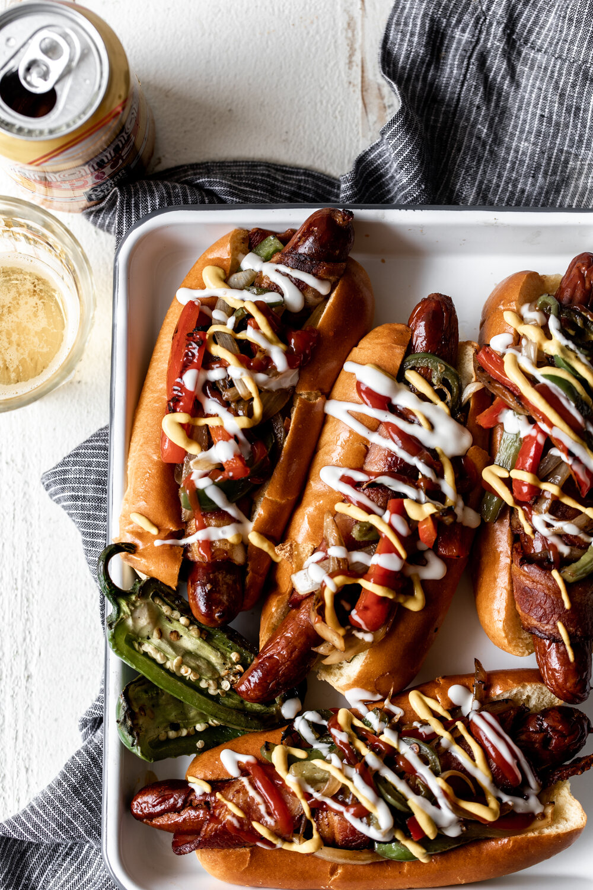

LA-Style Street Dog

Description
Many cities have their own iteration of the American classic dish the "hot-dog", but LA's classic style may take the cake.
Ingredients
- Bacon wrapped hot-dog franks
- Hot-dog buns
- Half of a white onion
- Half of a tomato
- Spice it up with a jalapeno
- Condiments of choice
Steps
- Start by adding franks to the grill with about 1/3 cup of oil
- Chop veggies to preferred size, and add to accumulated bacon grease from last step
- Add buns to grill
- Assemble hot-dog with veggies, and top off with condiments, voila!